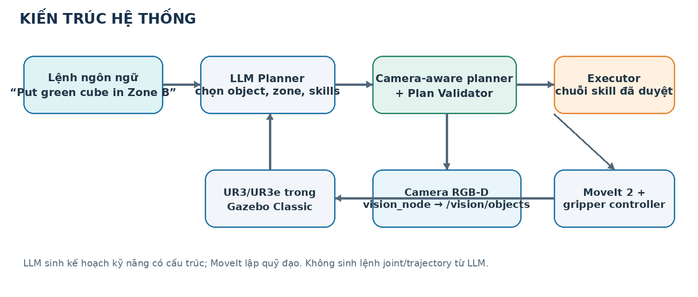
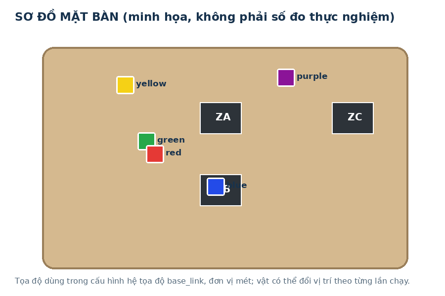
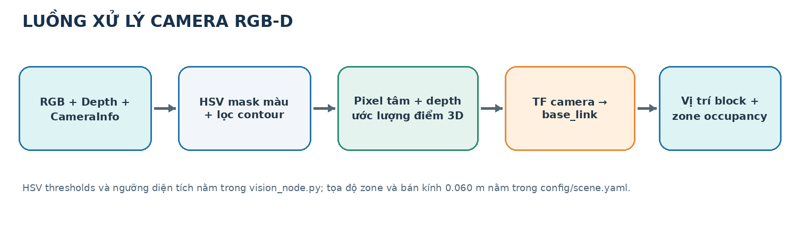
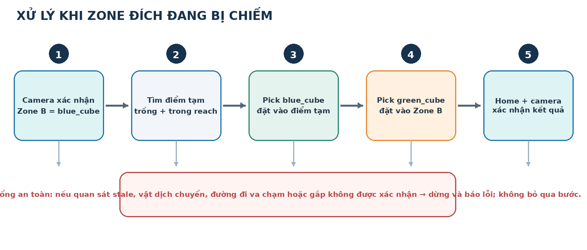
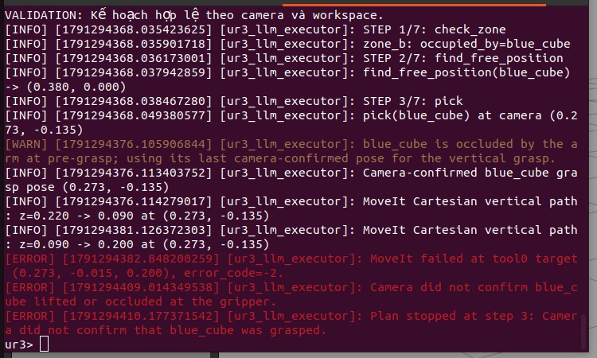
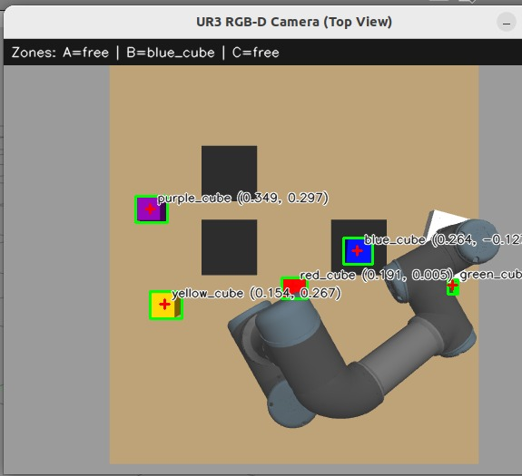

ĐẠI HỌC QUỐC GIA HÀ NỘI · TRƯỜNG ĐẠI HỌC CÔNG NGHỆ
Khoa/Viện: [Điền khoa hoặc bộ môn]
BÁO CÁO BÀI THỰC HÀNH 03
Robot UR3/UR3e · ROS 2 · MoveIt 2 · Gazebo Classic
Thiết kế bộ lập kế hoạch kỹ năng có nhận biết trạng thái môi trường, sử dụng camera RGB-D để phát hiện block và kiểm tra vùng đặt trước khi điều khiển robot.

| Sinh viên | [Họ và tên] |
| Mã số sinh viên | [MSSV] |
| Lớp học phần | [Mã lớp / nhóm] |
| Giảng viên | [Tên giảng viên] |
| Ngày hoàn thiện | [Ngày nộp] |
Bản Word có thể chỉnh sửa. Thay các nội dung trong ngoặc vuông, bổ sung link video/repository và cập nhật minh chứng của lần chạy cuối trước khi nộp.
TÓM TẮT · ABSTRACT
Bài thực hành xây dựng hệ thống điều khiển UR3/UR3e bằng kế hoạch kỹ năng do LLM lựa chọn, trong đó trạng thái block và vùng đặt được lấy từ camera RGB-D trong Gazebo. Bài toán trọng tâm là xử lý yêu cầu đặt một block vào zone đang bị chiếm. Camera phân đoạn màu, kết hợp ảnh độ sâu và phép biến đổi TF để ước lượng vị trí vật trong hệ tọa độ base_link; trạng thái này được dùng để biên dịch kế hoạch, kiểm tra vị trí tạm và kiểm tra tính hợp lệ trước khi thực thi.
LLM chỉ phân tích câu lệnh, chọn object/zone và sắp xếp skill. LLM không sinh trực tiếp lệnh khớp hoặc quỹ đạo. MoveIt 2 lập kế hoạch chuyển động cánh tay; gripper được điều khiển qua trajectory controller. Executor chạy từng skill, nhận quan sát mới và dừng khi phát hiện sai khác hoặc không xác nhận được kết quả.
| Hạng mục | Nội dung |
|---|---|
| Bài toán | Đặt green_cube vào Zone B; xử lý blue_cube đang chiếm zone bằng vị trí tạm. |
| Thành phần | UR3/UR3e, gripper hai ngón, camera RGB-D, Gazebo Classic, ROS 2, MoveIt 2. |
| Đóng góp cần mô tả | Perception theo camera; lập kế hoạch có điều kiện; Plan Validator; skill pick/place/home; kiểm tra va chạm và xác nhận sau thao tác. |
| Kết quả | Nhận diện và phát hiện zone chiếm chỗ: có. Gắp/nâng vật và hoàn tất tác vụ: chưa đạt. |
LLM planner; robot skill; RGB-D; MoveIt 2; UR3; Gazebo; gripper; plan validation.
Trang này được thiết kế như phần tóm tắt 01 trang; có thể xuất riêng thành PDF ngắn theo checklist bài tập.
01 · BÀI TOÁN VÀ YÊU CẦU
Trong bài toán phân loại, người dùng mô tả vật cần di chuyển bằng ngôn ngữ tự nhiên. Nếu zone đích đang trống, hệ thống có thể lập kế hoạch pick → place. Khi zone bị chiếm, robot cần quan sát môi trường, chuyển vật cản đến một điểm tạm an toàn, sau đó mới thao tác với vật được yêu cầu. Bởi môi trường có 05 block và 03 zone, trạng thái chiếm chỗ không thể được giả định cố định.
| Yêu cầu | Cách đáp ứng trong thiết kế | Kết quả ghi nhận |
|---|---|---|
| UR3/UR3e và gripper | UR3 trong Gazebo; gripper hai ngón điều khiển bằng trajectory action. | Gripper được ra lệnh đóng; chưa xác nhận vật được giữ/nâng. |
| Camera và trạng thái scene | RGB-D, phân đoạn màu, depth, CameraInfo và TF. | Nhận diện block; Zone B được báo occupied_by=blue_cube. |
| Zone bị chiếm | Chèn tìm điểm trống, dọn vật cản, rồi thao tác vật đích. | Kế hoạch được in/validate; thực thi dừng trong bước pick vật cản. |
| Plan Validator | Kiểm tra trạng thái camera, workspace, mục tiêu và skill sequence. | Log cho thấy kế hoạch hợp lệ trước khi thực thi. |
| LLM không điều khiển khớp | LLM trả về core plan kỹ năng; MoveIt tạo quỹ đạo. | Kiến trúc tách planner và bộ điều khiển. |
02 · KIẾN TRÚC PHẦN MỀM
Pipeline giữ nguyên nguyên tắc: lệnh tự nhiên → LLM Planner → kế hoạch có cấu trúc → robot skills → MoveIt 2/controllers → robot trong Gazebo. Camera cung cấp trạng thái môi trường cho bộ lập kế hoạch và validator. Sau thao tác, quan sát camera mới được dùng để đánh giá việc vật có được nâng hoặc đặt hay không.
| Module / package | Trách nhiệm | Giao diện hoặc file liên quan |
|---|---|---|
| vision_node | Nhận RGB-D, phân đoạn block, đổi tọa độ và suy ra zone occupancy. | /vision/objects, /vision/debug; vision_node.py |
| LLMPlanner | Hiểu lệnh; trả core plan theo schema; có parser cục bộ dự phòng. | llm_planner.py; LLM_BASE_URL / LLM_MODEL |
| PlanValidator | Biên dịch kế hoạch theo camera; kiểm tra object, zone, vị trí tạm và workspace. | plan_validator.py; config/scene.yaml |
| SkillPlanningExecutor | Nhận state; validate; thực hiện từng skill; kiểm tra trạng thái mới. | executor.py |
| RobotSkills | Gọi MoveIt cho arm motion và gripper controller cho thao tác hai ngón. | robot_skills.py; /move_action; gripper trajectory action |
| Simulation / config | UR3, bàn, 03 zone, 05 block, camera, controllers và giới hạn chuyển động. | worlds/ur3_sorting.world; launch; config/ |
03 · MÔI TRƯỜNG VÀ CAMERA
World Gazebo Classic gồm UR3, gripper, camera RGB-D nhìn từ trên, bàn thao tác, ba zone và năm cube màu. Zone được định nghĩa trong config/scene.yaml; block có thể dịch chuyển nên vị trí đang quan sát lấy từ camera, không đọc từ danh sách tọa độ cố định để ra quyết định.

| Tham số scene | Giá trị cấu hình | Ý nghĩa |
|---|---|---|
| Tâm zone_a | (0.27, 0.14) m | Tọa độ phẳng trong base_link. |
| Tâm zone_b | (0.27, −0.14) m | Vùng đích minh họa, bán kính kiểm tra 0.060 m. |
| Tâm zone_c | (0.43, 0.14) m | Tọa độ phẳng trong base_link. |
| Workspace | x: 0.08–0.47 m; y: −0.35–0.33 m | Miền thao tác đã khai báo; còn kiểm tra tầm với. |
| Độ cao thao tác | approach 0.22 m; grasp 0.09 m; lift 0.20 m | Giá trị cấu hình trong motion block, chưa đồng nghĩa với gắp thành công. |

Ảnh RGB được chuyển sang HSV và lọc theo dải màu của red/yellow/green/blue/purple. Sau bước hình thái học, contour phù hợp được lấy tâm pixel. Depth quanh điểm đó được lấy mẫu; CameraInfo cung cấp nội tại camera và TF đổi sang base_link. Điểm được so với tâm/radius các zone để gán occupant. Khi vật bị cánh tay che, không có quan sát mới đáng tin cậy thì executor phải dừng hoặc yêu cầu xác nhận lại.
04 · LLM PLANNING VÀ VALIDATION
LLM nhận câu lệnh và trả về core plan với object, đích và skill cơ bản. Planner dùng state mới nhất từ camera để mở rộng core plan theo điều kiện scene. Nếu zone đích đang có vật khác, kế hoạch thêm bước tìm điểm tạm phù hợp, chuyển vật đang chiếm chỗ ra ngoài, rồi mới di chuyển vật đích. Parser cục bộ có thể thay LLM endpoint khi cần chạy demo offline.
User: Put the green cube in Zone B. Camera: zone_b.occupied_by = blue_cube check_zone(zone_b) find_free_position(blue_cube) → điểm camera xác nhận trống pick(blue_cube) → place(blue_cube, temporary_position) pick(green_cube) → place(green_cube, zone_b) home()

05 · SKILL VÀ ĐIỀU KHIỂN ROBOT
| Skill | Thao tác dự kiến | Điều kiện xác nhận |
|---|---|---|
| check_zone(zone) | So sánh trạng thái camera hiện tại với vật đã quan sát trong kế hoạch. | Occupant không đổi; nếu đổi thì dừng. |
| find_free_position(object) | Chọn điểm ứng viên trong workspace, kiểm tra khoảng cách và trạng thái camera. | Điểm còn trống ở thời điểm dùng. |
| pick(object) | Mở gripper; tiếp cận pose quan sát; hạ theo phương đứng; đóng hai ngón; nâng. | Camera thấy vật đã nâng hoặc bước xác nhận sau nhả; đóng ngón đơn lẻ chưa đủ. |
| place(object,target) | Đưa vật đang giữ đến tọa độ zone/điểm tạm, hạ, mở gripper và rút lên. | Camera xác nhận vật ở đích và zone có occupant đúng. |
| home() | Đưa robot về tư thế home cấu hình. | MoveIt/controller báo hoàn tất. |
MoveIt nhận mục tiêu pose và collision scene gồm mặt bàn cùng vị trí block lấy từ camera. Khâu tiếp cận giữ block mục tiêu trong collision scene; phần hạ cuối là đường Cartesian theo phương đứng. Cánh tay di chuyển bằng controller quỹ đạo khớp. Gripper là hai khớp trượt được điều khiển qua action FollowJointTrajectory; đây là thao tác cơ khí trong mô phỏng, không có lệnh teleport object.
Trong cấu hình, điểm approach/grasp/lift lần lượt là z = 0.22/0.09/0.20 m và giới hạn tốc độ/gia tốc đặt 0.10. Các con số là giá trị thử nghiệm ban đầu; độ cao chính xác cần hiệu chuẩn với mặt bàn, tool frame, kích thước cube và hình học gripper.
06 · THIẾT KẾ THỬ NGHIỆM
Môi trường được mô tả trong package là ROS 2 Humble, Gazebo Classic, MoveIt 2 và Ubuntu [điền phiên bản thực tế]. World khởi tạo năm cube và ba zone. Ghi rõ commit/hash code, thời điểm chạy, endpoint LLM hoặc chế độ fallback, độ phân giải camera và thay đổi nào so với cấu hình mặc định:
cd ~/workspaces/ur_gz colcon build --packages-select ur3_llm --symlink-install source install/setup.bash ros2 launch ur3_llm simulation.launch.py
Mở terminal thứ hai để chạy planner/executor:
source ~/workspaces/ur_gz/install/setup.bash export LLM_BASE_URL=http://localhost:20128/v1 export LLM_MODEL=[ten-model] export LLM_API_KEY=[khong ghi khoa that vao bao cao] ros2 run ur3_llm executor
Kiểm tra camera bằng lệnh ros2 topic echo /vision/objects --once. Nhập lệnh thử tại prompt executor, ví dụ Put the green cube in Zone B.. Nếu cửa sổ xem trực tiếp cần hiện, chạy trong phiên desktop GUI; topic ảnh debug được publish riêng.
| Test case | Điều kiện | Kỳ vọng | Trạng thái báo cáo |
|---|---|---|---|
| T1: camera | Các cube nhìn thấy rõ. | Nhận diện tên, vị trí, zone occupancy. | Đã quan sát được trong ảnh/log minh chứng. |
| T2: zone đích có vật | Zone B chứa blue_cube. | Validator thêm bước dọn occupant qua vị trí tạm. | Kế hoạch được tạo; chuỗi chưa hoàn tất. |
| T3: pick vật cản | Blue cube còn ở Zone B. | Approach, hạ, kẹp, nâng và xác nhận. | Không đạt: chưa xác nhận blue_cube được nâng. |
| T4: vật đích và home | Chỉ chạy sau khi vật cản đã dọn thành công. | Đặt green_cube vào Zone B, rồi home. | Chưa thực hiện do T3 dừng sớm. |
07 · KẾT QUẢ THỰC NGHIỆM
 |
 |
zone_b: occupied_by=blue_cube find_free_position(blue_cube) -> (0.380, 0.000) pick(blue_cube) at camera (0.273, -0.135) MoveIt Cartesian vertical path: z=0.220 -> 0.090 MoveIt Cartesian vertical path: z=0.090 -> 0.200 MoveIt failed at tool target (...), error_code=-2 Camera did not confirm that blue_cube was grasped.
Trong lần chạy minh họa, camera có nhãn blue_cube ở gần tọa độ (0.264, −0.127) m và thanh trạng thái báo Zone B đang bị blue_cube chiếm. Planner chọn một ứng viên điểm tạm và in “VALIDATION: Kế hoạch hợp lệ theo camera và workspace”. Robot tiếp cận/hạ đến độ cao grasp theo log, sau đó quá trình MoveIt/gripper thất bại; ảnh và log không chứng minh vật đã rời mặt bàn. Executor dừng tại bước pick blue_cube nên các bước place vật cản, pick green_cube, place Zone B và home không được xác nhận hoàn tất.
| Chỉ tiêu | Kết quả | Minh chứng |
|---|---|---|
| Camera xác định block/vị trí | Đạt ở lần chạy ghi nhận. | Nhãn và tọa độ trên cửa sổ; /vision/objects. |
| Zone B occupancy | Đạt: blue_cube. | Overlay camera và log executor. |
| Plan có kiểm tra | Đạt ở bước validate trước thực thi. | Thông báo VALIDATION trong terminal. |
| Blue cube gắp/nâng | Chưa đạt / chưa được xác nhận. | MoveIt error; camera không xác nhận nâng. |
| Đặt green_cube và home | Chưa thực hiện trong chuỗi này. | Executor dừng trước các bước sau. |
08 · ĐÁNH GIÁ VÀ HOÀN THIỆN
Pipeline camera có thể cung cấp vị trí block và trạng thái zone đủ để planner tạo một kế hoạch có điều kiện. Validator chặn được bước tiếp theo khi thao tác pick không thành công, giúp trạng thái kế hoạch không bị giả định là đồng nhất với trạng thái vật lý. Tuy vậy, đây mới là kiểm thử từng phần: robot chưa chứng minh được thao tác gắp thật trong Gazebo và tác vụ dọn Zone B chưa đi hết chuỗi.
Log hiện có chỉ cho biết lỗi MoveIt/gripper và xác nhận nâng thất bại; chưa đủ để kết luận nguyên nhân duy nhất là thiếu lực kẹp. Các giả thuyết cần đo/kiểm tra gồm:
| Bước | Việc cần làm | Tiêu chí qua |
|---|---|---|
| 1 | Kiểm tra controller/joint state và giới hạn gripper; chạy đóng/mở không có cube. | Action báo success, hai ngón đến đúng vị trí lặp lại. |
| 2 | Đo kích thước cube, khoảng cách hai ngón, TCP và tọa độ grasp trên mặt bàn. | Gripper đặt đối xứng hai bên cube, không va bàn. |
| 3 | Chạy thử pick một cube ở vùng trống; ghi lại pose, log, ảnh trước/sau. | Cube rời mặt bàn và camera xác nhận độ cao thay đổi. |
| 4 | Chạy trường hợp Zone B bị chiếm; xác nhận từng lần place bằng camera. | Blue cube ở điểm tạm, green cube ở Zone B, robot home. |
README.md; ur3_llm/vision_node.py; ur3_llm/llm_planner.py; ur3_llm/plan_validator.py; ur3_llm/robot_skills.py; ur3_llm/executor.py; config/scene.yaml; launch/simulation.launch.py; launch/moveit.launch.py; worlds/ur3_sorting.world.
PHỤ LỤC · CHECKLIST NỘP BÀI
Checklist dưới đây được rút gọn theo yêu cầu nộp Bài 02 trong ảnh tham khảo, áp dụng cho gói báo cáo Bài 03. Thay các ô trống sau khi hoàn thiện repository và video:
| Hạng mục | Điền / kiểm tra |
|---|---|
| Video demo | [Dán link Google Drive ở chế độ người chấm có thể xem. Video nên cho thấy trạng thái thành công/thất bại đúng thực tế.] |
| GitHub public | [Dán URL repository; kiểm tra truy cập Public.] |
| Repository có đủ | Source code; launch; config; prompt; README hướng dẫn cài/chạy; nội dung độc lập với repo bài trước hoặc đặt trong nhánh assignments_2 theo yêu cầu. |
| PDF ngắn 01 trang | Có thể xuất trang “Tóm tắt” của báo cáo này; nêu kiến trúc, package/node, skills, luồng lệnh → LLM → skill → MoveIt → robot, kết quả và link. |
| Hình ảnh minh họa | Ảnh cửa sổ camera, log validator và lỗi gắp; thêm ảnh/video mới nếu có lần chạy tốt hơn. |
| Thông tin cá nhân | Họ tên, MSSV, nhóm, lớp học phần, giảng viên, ngày nộp. |
| Trạng thái demo | Ghi rõ đã nhận diện/đã lập kế hoạch nhưng chưa gắp/nâng được; không ghi hoàn thành pick-place khi chưa có minh chứng. |
Đây là khung báo cáo có nội dung nền dựa trên package và log hiện có. Trước khi nộp, đối chiếu ảnh/log với đúng phiên bản code sẽ nộp; cập nhật cấu hình thực tế, link repo/video, kết quả mới nhất và nhận xét của nhóm. Nếu chạy lại thành công, thay bảng kết quả cùng hình minh chứng; giữ lịch sử thử nghiệm thất bại nếu cần giải thích quá trình phát triển.
— HẾT —